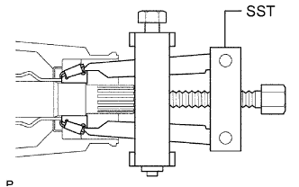
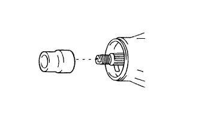
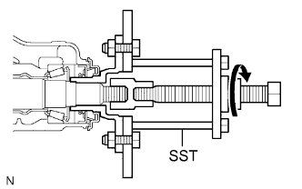

FRONT DIFFERENTIAL CARRIER OIL SEAL > REPLACEMENT |
| 1. REMOVE FRONT DIFFERENTIAL CARRIER ASSEMBLY |
Remove the front differential carrier assembly (Click here).
| 2. REMOVE FRONT DRIVE PINION COMPANION FLANGE NUT |
Using SST and a hammer, loosen the staked part of the nut.
Using SST to hold the companion flange, remove the nut.
| *a | Turn |
| *b | Hold |
| 3. REMOVE FRONT DRIVE PINION COMPANION FLANGE SUB-ASSEMBLY |
 |
Using SST, remove the companion flange.
| 4. REMOVE FRONT DIFFERENTIAL CARRIER OIL SEAL |
 |
Using SST, remove the oil seal.
| *1 | Oil Seal |
| *2 | Oil Slinger |
| 5. REMOVE FRONT DIFFERENTIAL DRIVE PINION OIL SLINGER |
| 6. REMOVE FRONT DRIVE PINION REAR TAPERED ROLLER BEARING |
|  |
Using SST, remove the roller bearing (inner).
 |
Using SST, tap out the roller bearing (outer).
| 7. REMOVE FRONT DIFFERENTIAL OIL STORAGE RING |
Using a screwdriver and hammer, tap out the oil storage ring.
| 8. REMOVE FRONT DIFFERENTIAL DRIVE PINION BEARING SPACER |
|  |
Remove the bearing spacer.
| 9. INSTALL FRONT DIFFERENTIAL DRIVE PINION BEARING SPACER |
Install a new bearing spacer.
| 10. INSTALL FRONT DIFFERENTIAL OIL STORAGE RING |
Using a brass bar and hammer, tap in a new oil storage ring.
| 11. INSTALL FRONT DRIVE PINION REAR TAPERED ROLLER BEARING |
 |
Using SST and a hammer, install the roller bearing (outer).
Install the roller bearing (inner).
| 12. INSTALL FRONT DIFFERENTIAL DRIVE PINION OIL SLINGER |
| 13. INSTALL FRONT DIFFERENTIAL CARRIER OIL SEAL |
Apply MP grease to the lip of a new oil seals.
Using SST and a hammer, tap in the oil seal.
| *a | Oil Seal Depth |
| 14. INSTALL FRONT DRIVE PINION COMPANION FLANGE SUB-ASSEMBLY |
|  |
Place the companion flange on the drive pinion.
Using SST, install the companion flange.
Coat the threads of a new nut with hypoid gear oil LSD.
 |
Using SST to hold the companion flange in place, tighten the nut to the correct torque.
| 15. INSPECT DIFFERENTIAL DRIVE PINION PRELOAD |
Using a torque wrench, measure the preload.
| Item | Specified Condition |
| New bearing | 0.98 to 1.57 N*m (10 to 16 kgf*cm, 9 to 13 in.*lbf) |
| Used bearing | 0.49 to 0.78 N*m (5 to 7 kgf*cm, 4.3 to 6 in.*lbf) |
| Item | Specified Condition |
| New bearing | 1.2 to 2.45 N*m (13 to 24 kgf*cm, 11 to 21 in.*lbf) |
| Used bearing | 0.71 to 1.66 N*m (8 to 16 kgf*cm, 7 to 14 in.*lbf) |
| 16. STAKE FRONT DRIVE PINION COMPANION FLANGE NUT |
 |
Using a chisel and hammer, stake the nut.
| 17. INSTALL FRONT DIFFERENTIAL CARRIER ASSEMBLY |
Install the front differential carrier assembly (Click here).